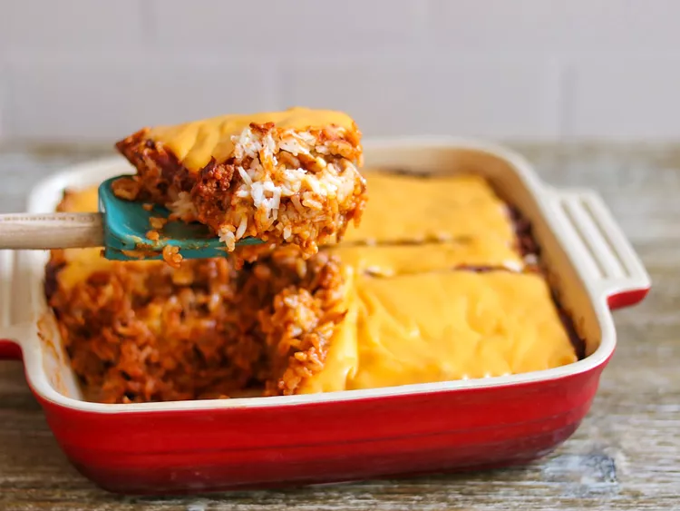

Ground Beef and Rice with Cheese

Description
This ground beef recipe can be made with ease for a delicious and quick meal
Ingredients
- 2 cups water
- 1 cup white rice
- 1 pound ground beef
- 3 cans condensed tomato soup
- 3 tablespoons chili powder
- 8 slices processed cheese
Steps
- Bring water and rice to a boil in a saucepan. Reduce heat to medium-low; cover, and simmer until the rice is tender and the liquid has been absorbed, 20 to 25 minutes.
- Preheat an oven to 400 degrees F (200 degrees C). Grease a 2-quart baking dish.
- While the rice is cooking, heat a large skillet over medium-high heat and stir in the ground beef. Cook and stir until the beef is crumbly, evenly browned, and no longer pink. Drain and discard any excess grease. Stir in the condensed tomato soup and chili powder; cook until heated through.
- Spread 1/3 of the rice into the bottom of the prepared baking dish and cover with 1/3 of the ground beef mixture. Place 2 slices of processed cheese over the meat, then cover with 2 more layers of rice and meat. Arrange the remaining 6 slices of cheese over the top.
- Bake in the preheated oven until the casserole has heated through and the cheese is bubbly and browned, about 20 minutes.